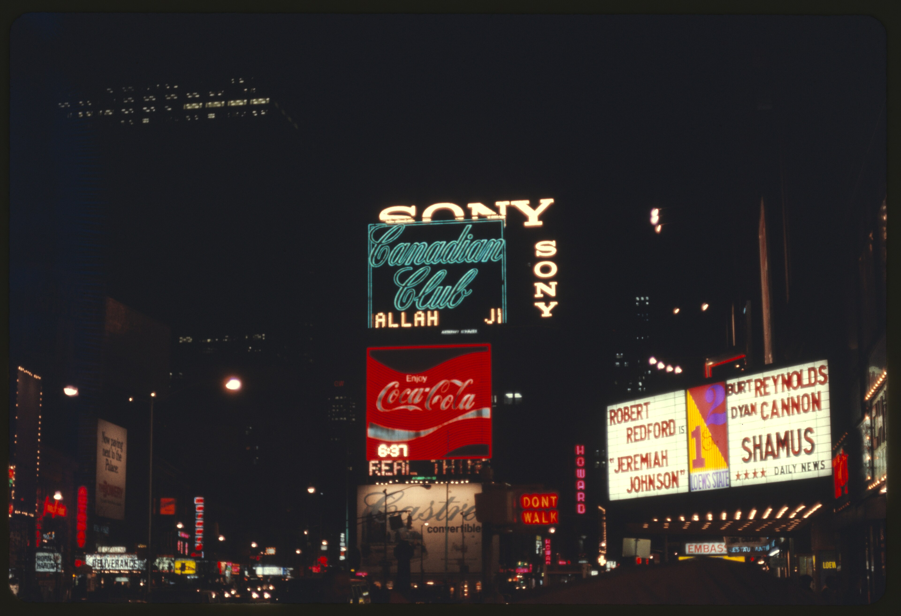
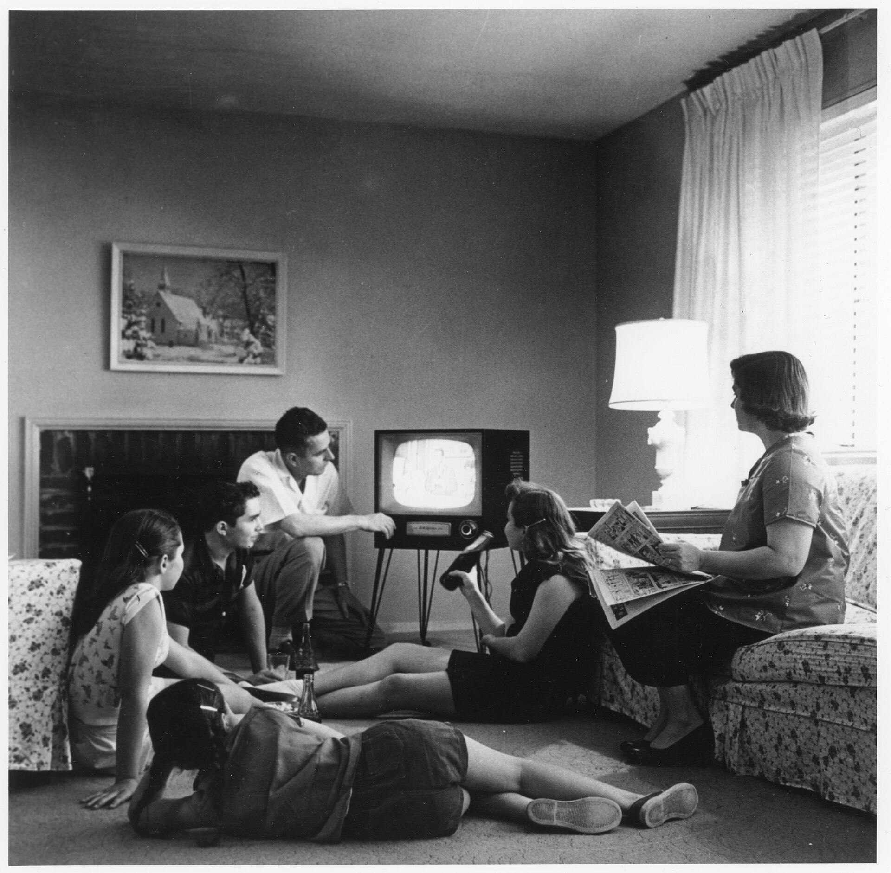
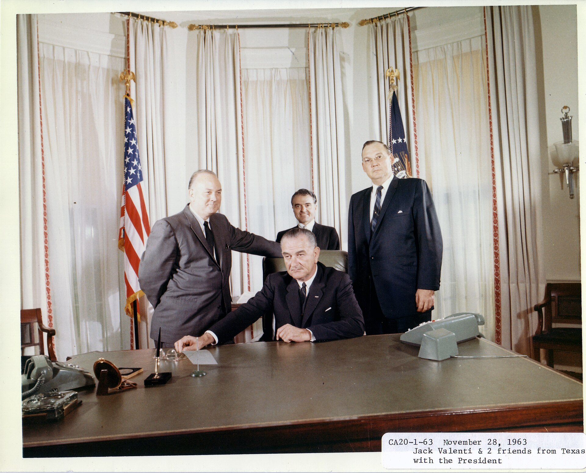
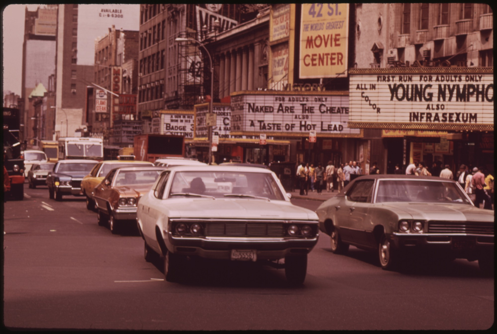
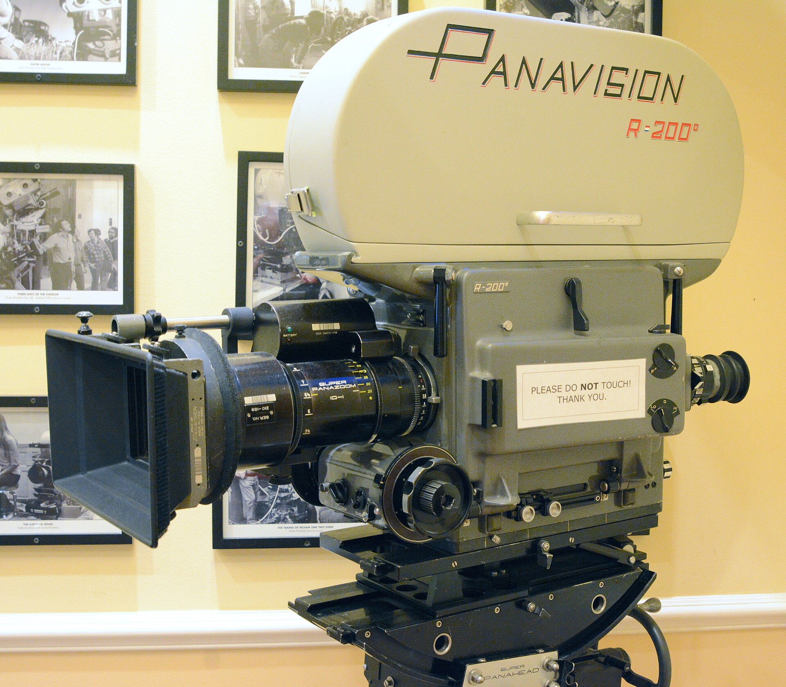
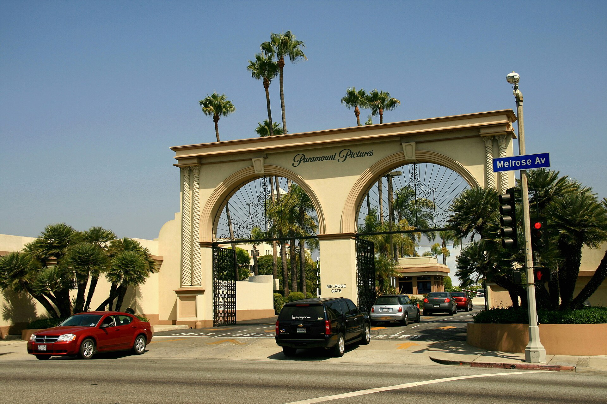
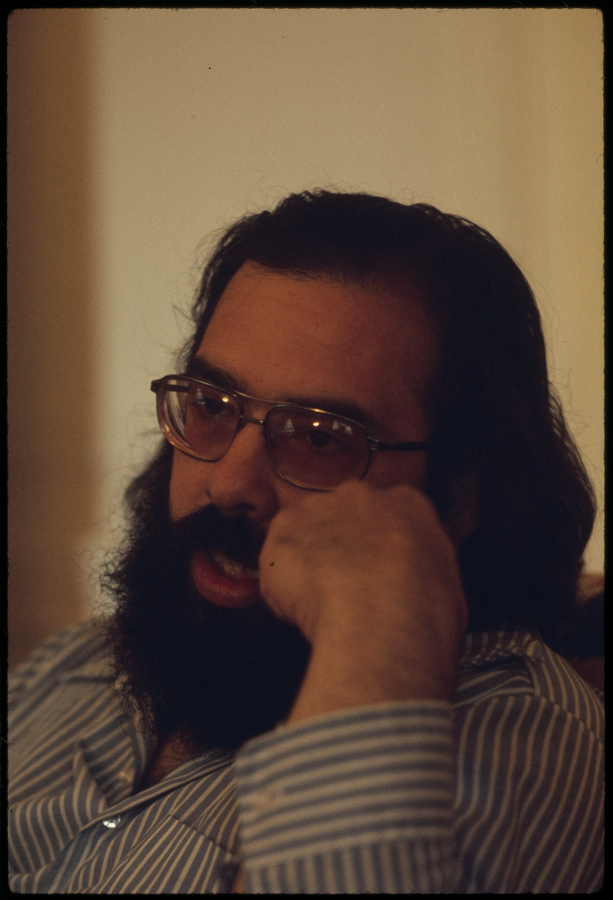
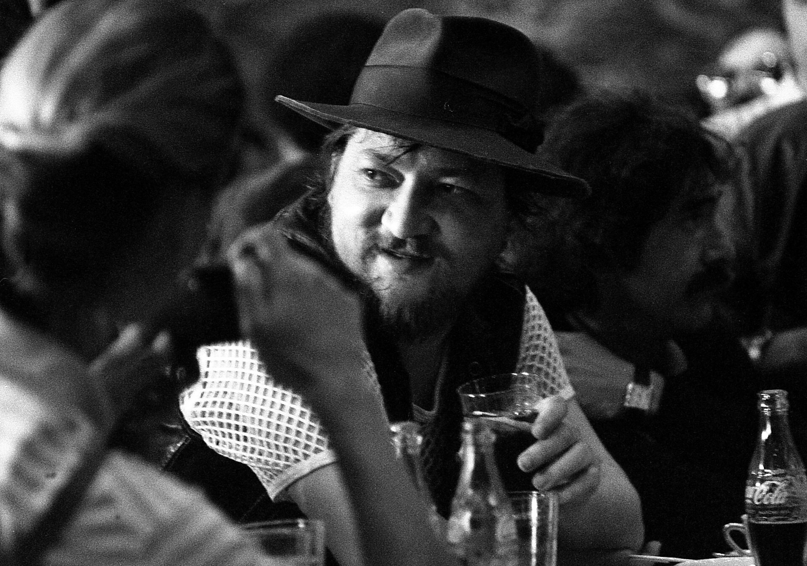
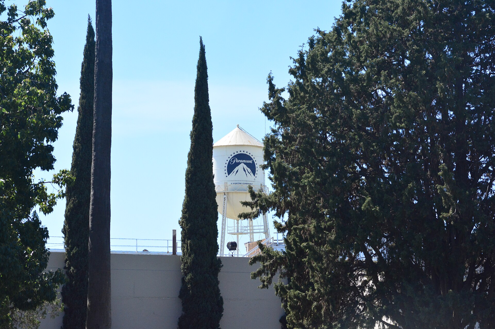

Wednesday · Film
(c. 1967–1980): the studios lose the plot, then bet on directors
Television took the weekly audience, the lost its force, and the old moguls sold out to conglomerates. American studios then financed younger directors, , and profit participants — until , , and taught them a different lesson.

.jpg){kind=link}
“” is a historians’ name, not a membership card. The useful facts are industrial. The major studios had lost their theaters after the 1948 , lost the weekly audience to television, and lost the ’s certainty. Conglomerates bought the logos. They then financed younger directors and profit participants because those films were making money with the people who still bought tickets. French New Wave films were something American directors and critics had actually watched — ’s writers offered the script to and — not an Asia footnote and not a shot-for-shot template. , the first features, and the tail of Brazilian were running in the same years. They are contemporaneous arguments, not assigned peers.
Select any words, or tap a dotted term.
- 1948 Theaters : the majors have to sell their theater chains. A flop no longer has a captive circuit.
- 1966 Code, conglomerate, import becomes president (May). takes (October). MGM releases ’s in the U.S. without a Code seal (18 December).
- 1967 The break (13 August). (December). ; buys . ’s essay on , 21 October.
- 1968 Ratings The rating system takes effect on 1 November: , replacing the .
- 1969 The road . buys . founds in San Francisco.
- 1972–74 The studio hit (1972). camera (1972). and (1974). under .
- 1975–77 The booking change and (1975). (1976). (1977). Television advertising and a wide opening become a method.
- 1979–80 The edge (1979). ’s and ’s (1979). premieres (November 1980). sells the next year.
Before
The studios lose the weekly audience, the Code, and the old owners
The Hollywood that replaced was already in pieces. In 1948 the Supreme Court, in , ordered the major studios to sell their theater chains. A production company could no longer book its own films into its own houses as a matter of course. Television then took the habit of going out. Weekly attendance, about ninety million tickets just after the war, was about forty million by the end of the 1950s. The living room set was not a metaphor. It was a box that did not charge admission.

{kind=link}
The studios answered with size. — reserved seats, higher prices, an overture — were meant to be what television could not be. , released by in 1963, made the cost of that answer a public fact. , from the same studio in 1965, then made the format look like a solution, which is how a hit becomes a trap: more reserved-seat musicals and spectacles were ordered. Several of them failed. The old moguls were dying, selling, or already gone. What replaced a family name on the door was often a conglomerate that wanted the film library and the real estate.
The other inherited machine was the , written in 1930 and enforced from 1934 by ’s office under the trade association had run. A studio film without a Code seal was hard to book. By the mid-1960s the seal was already a problem. In May 1966 , a aide, left the White House to become president of the . He later wrote that he meant to junk . In October 1966 ’s took control of and soon put in charge of production. In 1967 merged with ; , an insurance company, bought , a financier of independent packages rather than a lot full of contract players. , a parking and funeral business, would buy in 1969. The logos stayed. The owners were no longer showmen who had built the lots.

{kind=link}
The era
1966–68 as a trigger, then a decade of bets on directors
did not fall in one night. In 1966 filmed ’s for with language office did not want. The film went out with a “” line. later called that warning too little. On 18 December 1966, MGM released ’s in the United States through a subsidiary, , without a seal at all. The condemned it. The film made money. A major distributor had shown that the seal was optional if the booking was large enough.
opened on 13 August 1967. directed; produced and starred, with as . and had written a gangster film they first offered to and — not as a press stunt, but because they had watched the French New Wave and wanted that kind of camera and that kind of mixing of tones. made the picture at It cuts jokes against killings and does not punish the couple in the old Code manner before the ending. Early reviews split. ’s long essay in of 21 October 1967 treated the film as a break, not a mess. The film then found a large young audience. In December, ’s , released by ’s , with , , and , did the same job from another door: an independent distributor, a twenty-year-old who looked it, a hit the majors had to notice.
On 1 November 1968 the rating system took effect. The original labels were . The job had changed. The trade association would no longer approve or rewrite a script. It would tell parents a letter. M was later renamed GP, then PG. There was no PG-13 until 1984. What the ratings made possible, immediately, was a studio film that could be advertised as adult without pretending to be a family and without going out as a smuggled import.

{kind=link}
What the films looked like followed from who was allowed to make them, and with what gear. was cheaper than building a city on a stage once cameras were quiet enough to record sound without a blimp. ’s , introduced in 1972, was one of those cameras; ’s used it. Directors and stars took points — a percentage of the profits — instead of, or on top of, a studio salary. Agents and producers sold : a star, a director, and a script, offered as a unit to a studio that no longer kept those people under long-term contract. MCA had packaged television that way. In features, producing himself in , and selling to , are the same industrial sentence. The “” label, later fixed by a 1979 book, named the film-school cohort: from , from , from , beside them, from television rather than from the same classrooms. They were not the whole field. and came from theater and comedy. came from industrial films and television. came from the cutting room. came from criticism, a reader with a camera.

{kind=link}

{kind=link}
The three logos that matter most in this window behaved differently. , under , bet on and on and for a few years looked like the smartest room in town. had , then ’s , and a new parent that was not a movie company. kept doing what it had long done — financing packages rather than running a factory of contract stars — until that habit met . , in 1969, sat slightly to the side: directed, produced, stole scenes, made it, released it, and the production cost was in the neighborhood of four hundred thousand dollars. The return was large enough that executives went looking for more films like it. That search is the era.
The field
Many names, and three films to look at closely
Name the field before slowing down. Directors: , , , , , , , , , , , , , . Producers and owners: , , , , , , , , , Brown. Faces: , , , , , , , . Writers: , , , . Camera and cut: , . Music: . Critics: , . That is already too many for a poster and too few for a census. Deepen three works.
is the break. The useful facts are specific. had the power to produce and to cast himself. The writers had watched Paris. had directed before and was not a film-school graduate. paid for a gangster picture that used sudden violence the way the New Wave had used a jump cut: as something the audience was not warned to treat as a mistake. and became a fashion fact as well as a box-office one. ’s essay did not create the ticket line by itself; it named, for a magazine audience, what the line was already doing. After 1967 a studio could see that a young crowd would buy a film the would have rewritten. , arriving the same year from rather than from a major, confirmed the audience. , two years later, confirmed the budget. The break is 1967. The proof kept arriving.
is the new studio hit. owned ’s novel. , a graduate with a company in San Francisco, was not the studio’s first idea for director, and was not its first idea for Michael. let both bets stand. underexposed the interiors. played the father; played the son who takes the business. The film opened in 1972 and made a great deal of money. That is the industrial sentence: a conglomerate studio, a director with points, a bestseller, a film that looks like an epic and behaves like an project. , in 1974, and , the same year from , show the range inside one name. , also 1974, also ’s , with directing ’s script and in the lead, is the same studio using the same window for a private-eye film would have cleaned up. When later writers say the studios “bet on directors,” this is the bet that paid.

.jpg){kind=link}
and close the window from the other side. shot for and Brown at , from ’s novel. cut it; wrote the two-note figure that advertised the shark when the shark was not on screen. The film opened on 20 June 1975 in a few hundred theaters after a television campaign — not a slow build. It became the first film to earn $100 million in U.S. theatrical rentals, the distributor’s share. Two years later , coming off , released through . The premise could be stated in a line. Toys and sequels were part of the business plan. It took ’s rentals record. , , and are still in these years — ’s overlapping city, and ’s New York, ’s war film that won — but the lesson the conglomerates kept was the one that looked like a calendar: open wide, advertise on television, sell a sentence, repeat in summer. is the later slang for that sentence. The booking is the 1975–77 fact.
Elsewhere
The same years, different money
was not a Hollywood franchise. The 1962 had already said that the old West German cinema was finished. In the 1970s the films that traveled were paid for in part by television and, from 1971, by the , a cooperative of filmmakers. worked at a speed American did not require: in 1974, and a long list beside it. ’s (1972) and ’s (1976) are other festival names. ’s would take in 1979, the same year as . The comparison that matters is money and venue: a television-backed German film on the festival circuit beside an American studio film in a few hundred air-conditioned houses. Same years. Different checks.

{kind=link}
In Hong Kong the useful 1970s fact is television, not a sudden 1967 mirror of . hired young directors who had often studied abroad. , , and learned to shoot quickly on 16mm and on tight schedules. The theatrical New Wave is usually dated from 1979: ’s , ’s , and a cluster of other first features. That is the end of this American window, not a subplot inside . Brazilian is older. ’s is 1964. By the 1970s the military dictatorship had scattered the movement; often worked in exile. It belongs here as a tail running in the same decade, not as a peer assigned to .
The festival circuit was where those cinemas met. , , and the showed European art films to the same journalists who would, a month later, write about a opening. ’s and ’s sharing in 1979 is a date, not a merger. American directors had watched the New Wave. German, Hong Kong, and Brazilian filmmakers had their own studios, censors, and broadcasters to fight. The honest look outward is contemporaneous, not a formula of Western frame plus Asian peer.
After
Heaven’s Gate, the conglomerates, and a calendar
’s (1978) won the prizes that buy a director a larger bet. gave him . The film premiered in November 1980, was pulled, recut, and still failed in American theaters against a cost reported in the tens of millions. , tired of being the company that owned that headline, sold to MGM in 1981. Director-driven packages did not vanish overnight. The public lesson, for conglomerate boards, was that a director’s cut of the profits could also be a director’s cut of the company.
The other lesson was already on the calendar. had shown that summer, television spots, and a wide opening could pull rentals over a line no had reached so fast. had shown that a sentence and a toy line could do it again. The studios that remained — inside , inside a communications company, , — kept the logos and learned to slot a few large films rather than to keep a slate of director bets in the 1972 manner. is the later word. The 1980 fact is simpler: the window this lesson describes had an end. This is not a 1980s chapter. It is the edge where the 1970s bet stopped looking like the future.

{kind=link}
A question
A question to keep asking
If a studio can sell a film in one sentence on television before anyone has seen it, what is it still paying the director for?
Fun fact
Jaws was first to $100 million in rentals, not in tickets
opened on 20 June 1975. It is often called the first film to “gross $100 million.” That is the wrong unit. Several earlier films, including and , had already taken more than $100 million at the box office — the money paid at the window. Theatrical rentals are the distributor’s share of that money. was the first film to earn $100 million in U.S. theatrical rentals. The distinction is the point of the booking: a wide opening and a television campaign pulled the studio’s share over that line in a single summer. took the rentals record two years later.